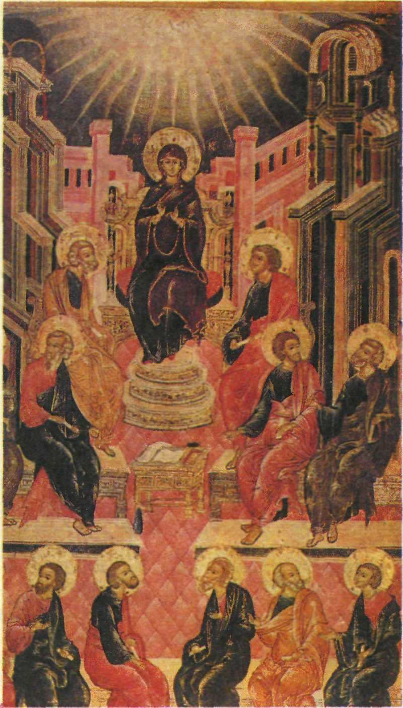

Иосиф Владимиров
Иконописец XVII века, работавший для царского двора.
Иосиф Владимиров – иконописец XVII века, известный своими работами для царского двора. Он участвовал в росписях Кремля, создавая произведения, которые отражали величие того времени.
Его стиль сочетал традиционные элементы иконописи с новыми художественными приёмами, характерными для XVII века.
